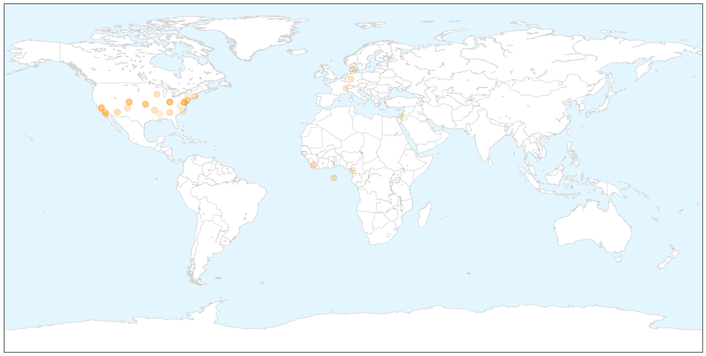
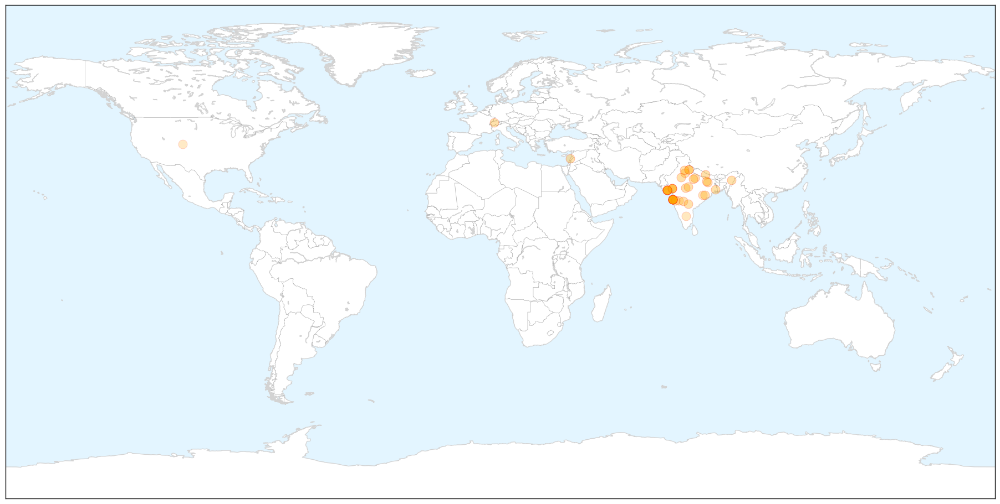

Measles
30-Day Web Trend
5 alerts, 6 warnings

30-Day Twitter Trend
1 alerts, 0 warnings

Article Locations

X

Article Confidences

Top Articles:
- 0.986
- MMR vaccinations spike in Arizona; are you up to date?
- 0.961
- Measles scare over with no spread
- 0.946
- WHO calls for more measles vaccination in Europe as large outbreaks persist
- 0.945
- Metro Brief: District of Columbia confirms second case of measles in 2015
- 0.911
- US Measles Outbreak a Wake-Up Call
- 0.907
- Three Berkshire County schools fall below suggested minimum measles inoculation threshold
- 0.907
- Sweden reports 1st measles case; antivaxxers and war blamed for Bosnia’s outbreak
- 0.901
- Liberia Ebola Situation Report no. 74 - 25 February 2015 - Liberia
- 0.897
- Immunization rates relatively high among schools in area
- 0.878
- Vaccination and public health
- 0.871
- Seth Mnookin on vaccination and public health
- 0.854
- Parents increasingly ask doctors to delay vaccines
- 0.841
- Dana Hills High School
- 0.805
- parents asking doctors to delay vaccinating their children « CBS Atlanta
- 0.804
- Bioterrorism, public health, superbug, biolabs, epidemics, biosurveillance, outbreaks
- 0.804
- Report: Parents have pushed for delays in vaccinations
- 0.793
- Doctors warn of 'worrisome' trend as parents increasingly demand children's vaccines to be delayed
- 0.786
- More parents pushing doctors to postpone vaccines
- 0.780
- Feds weigh in on "vaccine wars"
- 0.775
- Most Doctors Give In to Requests by Parents to Alter Vaccine Schedules
- 0.765
- Doctors agree to delay vaccinations to build trust with families, study finds
- 0.735
- Survey finds parents pressuring doctors to delay children's shots
- 0.727
- Survey: More parents seek vaccine delays
- 0.724
- WHO calls for scaling up vaccination against measles
- 0.707
- WHO seeks to improve immunization access in Central Africa
- 0.673
- Area health professionals stress importance of vaccines
- 0.659
- Why I Believe Vaccines Should Not Be Mandatory
- 0.652
- Unvaccinated children in area schools are topic of letter sent to community
- 0.652
- Doctors Often Yield to Parents' Requests to Delay Kids' Vaccines
- 0.620
- Minnesota bill would require parents talk with doctor before kids skip vaccinations
- 0.614
- MEASLES — How does your local school rank? A new look as state lists percentage of school measles exemptions -- Port Angeles Port Townsend Sequim Forks Jefferson County Clallam County Olympic Peninsul
- 0.605
- Propaganda Assault on Informed Consent
- 0.604
- Doctors Often Yield to Parents' Requests to Delay Kids' Vaccines
- 0.585
- Have You Heard About the Other Vaccination Movement That’s Causing ‘Tension’ Between Doctors and Parents?
- 0.571
- U.S. Parents Pressure Doctors to Spread Out Kid Vaccinations
- 0.509
- State a leader in controlling infectious diseases
Top Tweets:
-
No tweets found for Mar 02, 2015
Swine Flu
30-Day Web Trend
16 alerts, 9 warnings

30-Day Twitter Trend
2 alerts, 0 warnings

Article Locations

X

Article Confidences

Top Articles:
- 1.000
- Swine flu in Mumbai: Maha govt will bear swine flu treatment cost
- 1.000
- 40 more dead as swine..., SahilOnline News
- 1.000
- Swine flu claims 34 more lives, toll mounts to 1,075
- 1.000
- Rain, fall in temp may lead to rise in swine flu cases
- 1.000
- Swine flu death toll climbs to 1075, almost 20,000 cases nationwide
- 1.000
- Swine flu death rings alarm bell
- 0.999
- Swine flu could spread to Pakistan: Ansar Burney
- 0.999
- Health Minister appeals all to collectively fight Swine flu; asks not to travel to outbreak areas
- 0.998
- Swine flu in West Bengal: 16 new cases in 24 hrs, total affected 131
- 0.998
- Swine flu spreads in UP, number of cases likely to go up due to rain
- 0.997
- Weather damper on battle against flu
- 0.997
- Treat all swine flu patients free of cost: Maharashtra CM Fadnavis
- 0.997
- Rain to flare up swine flu terror
- 0.995
- Swine flu in Nagaland: State to collectively fight, instead of provide wrong information
- 0.995
- Swine flu in India: Nationwide spurt in cases, death toll crosses 1000
- 0.995
- H1N1 Swine flu: 6 more die in Rajasthan; Government says no negligence
- 0.994
- Swiss strain of flu virus not so scary, doctors say
- 0.994
- Sonam Kapoor tests Positive for Swine flu, Admitted to Hospital in Mumbai
- 0.992
- Swine flu spreads further in Uttar Pradesh
- 0.992
- Sudden drop in temperature raises viral infection scare
- 0.991
- 3 Suspected Swine Flu Cases Detected in Tyre — Naharnet
- 0.989
- Fall in temperature can lead to rise in swine flu cases
- 0.988
- Jharkhand requires more VTM kits to be fully prepared
- 0.984
- Swine flu strikes Ranchi woman
- 0.979
- School Students Worried as Swine Flu Cases Surge in Gujarat
- 0.978
- Sonam Kapoor tests positive for swine flu - Sonam Kapoor- Swine Flu- Dolly Ki Doli- Prem Ratan Dhan Payo
- 0.977
- Maharashtra govt to bear swine flu treatment cost
- 0.977
- Swine flu-hit member wants drive to educate people on disease
- 0.975
- Swine flu claims 8 more lives in Gujarat; toll reaches 283
- 0.974
- Swine flu-hit Sonam Kapoor admitted to Kokilaben hospital
- 0.971
- Maharashtra picks up private hospital tab to treat swine flu
- 0.970
- Over 1,100 dead due to swine flu
- 0.968
- Over 1,100 dead due to swine flu
- 0.960
- Swine flu toll in Maharashtra rises to 152
- 0.959
- 'Individuals, state to collectively fight against swine flu'
- 0.955
- Maharashtra swine flu toll reaches 152
- 0.937
- Swine flu: Maharashtra govt says next 15 days are critical, extends help to hospitals
- 0.928
- Dallasblog.com, the Dallas, Texas news blog and Dallas, Texas information source for the DFW Metroplex.
- 0.924
- Here's How Salman Khan is Protecting Himself from Swine Flu
- 0.864
- Sonam Kapoor recovering well, swine flu under control
- 0.847
- Sonam Kapoor admitted in Mumbai hospital
- 0.835
- Sonam Kapoor recovering well after contracting swine flu
- 0.817
- Sonam Kapoor in Mumbai for swine flu treatment, condition stable
- 0.751
- H1N1 Patient Dies After ICU Power Cut, Claims Family
- 0.726
- Sonam Kapoor recovering well, swine flu under control
- 0.688
- Sonam Kapoor showing signs of speedy recovery from swine flu : Celebrities, News
- 0.669
- Pediatricians Under Pressure From Parents To Spread Out Vaccine Schedule
Top Tweets:
-
No tweets found for Mar 02, 2015